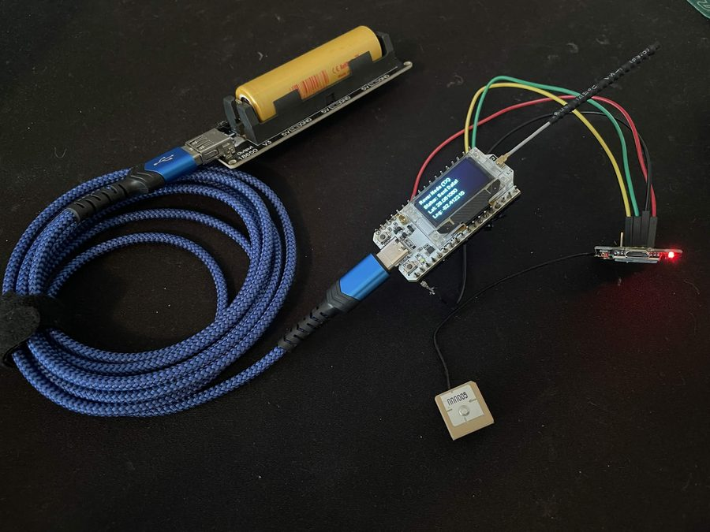
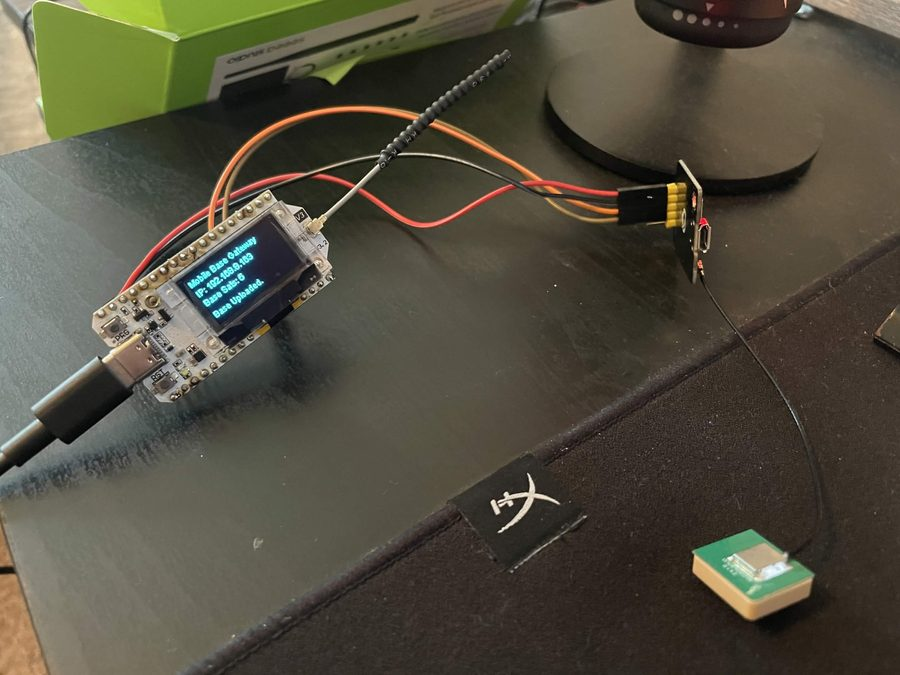
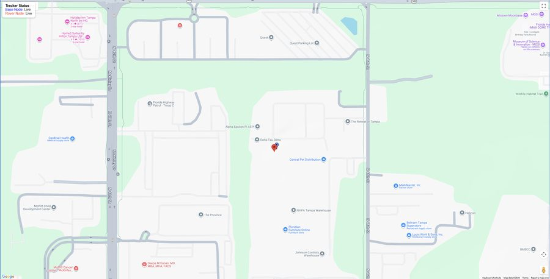

Trenton Horner
HPC Systems Administrator I — University of South Florida
Role
HPC Systems Administrator I
Jun 2026 — PresentSince June 2026 I have helped run manage and configure USF's GAIVI, the research computing cluster behind USF's AI, computer vision, and machine learning work.
Most of my time goes to building out GAIVI 3.0, USF's next-generation Slurm compute cluster. It is a ground-up rebuild rather than an incremental upgrade of the existing GAIVI2.0 infrastructure.
Most of my day is split between keeping the GPU cluster running smoothly — user issues, job scheduling, node problems — and the quieter infrastructure work underneath it all like patching, hardening, and networking
- Building out GAIVI 3.0 — node provisioning, Slurm control-plane configuration, and scheduling policy.
- Architecturing and implementing a stateless OS over network for evert GPU node
- Administer the existing GAIVI cluster: job triage, resource allocation, and user onboarding.
- Automate routine cluster administration and health checks with Bash, Slurm, and Python.
$ squeue --partition=gpu --format="%.8i %.9P %.10j %.9u %.8T %.12M %.5D %R" JOBID PARTITION NAME USER STATE TIME NODES NODELIST(REASON) 1204877 gpu GAIVI2.0 thorner RUNNING 402-11:37:04 16 gaivi-g[01-16] 1204878 gpu GAIVI3.0 thorner PENDING 0:00 24 (Dependency)
Projects
Cloud LoRa-GPS Tracker Completed
Jan 2026 — May 2026End-to-end IoT tracking system. A battery-powered ESP32 rover node parses NMEA sentences from a GT-U7 GPS module and broadcasts JSON telemetry over 915 MHz LoRa; a second ESP32 acts as a Wi-Fi gateway, pushing packets into Firebase; a self-contained web dashboard renders live positions on Google Maps. Firebase persistence keeps the last known fix visible even when the hardware loses power.



C++ (embedded) · Heltec ESP32 V3 · LoRa 915 MHz · Firebase Realtime Database · Google Maps JS API
SecureNet Intranet Portal Completed
Mar 2026A small capture-the-flag exercise: a mock intranet login built so the credential check can be defeated by reading the client-side source. Written as a teaching example of why authentication never belongs in the browser.
This site Active
May 2025 — PresentYou're here!
Education
- Degree
- B.S. in Cybersecurity
- Institution
- University of South Florida
- Graduated
- May 2026 — GPA 3.85
- Awards
- Florida Medallion Scholarship · USF Scholars Gold Award
- Coursework
- Linux CLI, Computer Networks, Information Security
Certifications
- Cisco CCNA Apr 2026
- CompTIA Security+ ce Mar 2026
- Oracle Cloud Infrastructure AI Foundations Sep 2025
- InsightAppSec Certified Specialist Jun 2025
Technical
- HPC
- Slurm, job scheduling, resource allocation, GPU cluster administration
- Systems
- Linux (Ubuntu, RHEL, Proxmox VE), Unix, Windows, VMware
- Languages
- Bash, Python, C, SQL, KQL, HTML, CSS
- Security
- Splunk, Elastic Stack, Wireshark, Ghidra, access control fundamentals